このワークショップでは、Oracle Visual Builder Studioを利用してCI/CD環境をセットアップし、Oracle Autonomous Transaction ProcessingをデータソースとしたJavaアプリケーションをOracle Container Engine for Kubernetes（OKE）にデプロイする一連の流れを体験することができます
このワークショップには以下のサービスが含まれます。
-
- Oracle Visual Builder Studio（略称：VBS）:
- Oracle Cloudが提供する事前統合済みのチーム開発プラットフォームサービスです。
-
- Oracle Autonomous Transaction Processing（略称：ATP）:
- 運用がすべて自動化された自律型データベースサービスです。
-
- Oracle Container Engine for Kubernetes（略称：OKE）:
- マネージドなKuberentesクラスタを提供するクラウドサービスです。
-
- Oracle Cloud Infrastructure Registry（略称：OCIR）:
- フルマネージドなDocker v2標準対応のコンテナレジストリを提供するサービスです。
前提条件
ワークショップを開始する前に以下を準備してください。
-
OKEハンズオン事前準備を実施済みであること
Oracle Cloud Infrastructureの基本操作はチュートリアル : OCIコンソールにアクセスして基本を理解するをご確認ください。
ゴールを確認する
はじめに、手順を最後まで実施したときにどのような環境が作られるか確認して、ゴールの全体像を掴んでおきましょう。
手順を最後まで行うと、下図のような環境が構成されます。

| 構成要素 | 説明 |
|---|---|
| OKE Cluster | アプリケーションのコンテナが稼働するクラスター本体です。OKEをプロビジョニングすると、Oracle Cloudの各種IaaS上に自動的に構成されます。 |
| Visual Builder Studio | OKE Clusterに対してアプリケーションのデプロイを実施するサービスです。今回はサンプルデータの登録でも利用します。 |
| Autonomous Transaction Processing | 今回デプロイするサンプルアプリケーションが利用するデータベースです。 |
| OCIR | コンテナイメージを保存するレポジトリです。 |
1.Visual Builder Studio用コンパートメントの作成
コンパートメントについて
Oracle Cloudにはコンパートメントという考え方があります。
コンパートメントは、クラウド・リソース(インスタンス、仮想クラウド・ネットワーク、ブロック・ボリュームなど)を分類整理する論理的な区画で、この単位でアクセス制御を行うことができます。また、OCIコンソール上に表示されるリソースのフィルタとしても機能します。
まず初めに、後ほど実施するVisual Builder Studioのセットアップで利用するコンパートメントを作成します。
OCIコンソールにログインします。
ハンバーガーメニューの”アイデンティティとセキュリティ”⇒”コンパートメント”をクリックします。

“コンパートメントの作成”をクリックします。

以下の情報を入力します。

| key | value |
|---|---|
| 名前 | コンパートメント名を入力します。今回は”CTDOKE”とします。 |
| 説明 | コンパートメントに対する説明を入力します。今回は”CTDOKE”とします。 |
| 親コンパートメント | 作成するコンパートメントの親となるコンパートメントを選択します。今回はデフォルトのままにします。 |
“コンパートメントの作成”をクリックします。
これでコンパートメントの作成は完了です。
2.Visual Builder Studioのセットアップ
ここでは、Visual Builder Studioのセットアップを行います。
Oracle Cloud Infrastructure(OCI)コンソールにログインします。
左上のハンバーガーメニューをクリックし、”OCI Classic Services”⇒”Developer”をクリックします。

Visual Builder Studioのインスタンス画面が開きます。
右上の”インスタンスの作成”ボタンをクリックします。

インスタンス作成画面が開くので、赤枠内の情報を入力し、”次へ”ボタンをクリックします。

| key | value |
|---|---|
| Instance Name | Visual Builder Studioのインスタンス名。今回は”Handson” |
| Description | Visual Builder Studioインスタンスの概要説明。今回は設定しない。 |
| Notification Email | Visual Builder Studioに関する通知先のメールアドレス。今回は設定しない。 |
| Region | Visual Builder Studioインスタンスを作成するリージョン。今回は”us-ashburn-1” |
| Tags | Visual Builder Studioインスタンスに設定するタグ。今回は設定しない。 |
インスタンス作成の確認画面が表示されます。”作成”ボタンをクリックします。

インスタンス作成がリクエストされます。Statusが”Creating service”になっていることを確認します。
インスタンス作成の完了までしばらく時間がかかります。

インスタンス作成完了までの間にワークショップで利用するアカウント情報の収集を実施してください。
受講者の方へ
ここから先の手順では、ワークショップで利用するアカウント情報の収集を完了している必要があります。
インスタンス作成が完了したら、作成したインスタンスの右端にあるハンバーガーメニューをクリックし、”Acccess Service Instance”をクリックします。
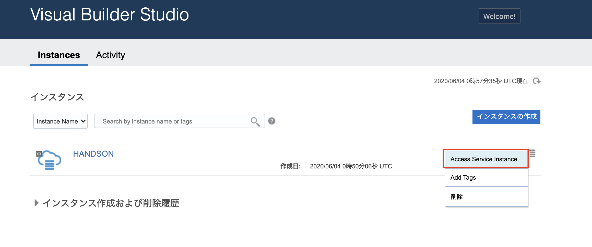
Visual Builder Studioにアクセスできない場合
以下のエラーメッセージが表示された場合、以下の対応をお願いいたします。
このサイトにアクセスできません
https://psm-cacct-xxxxxxxxxxxxxxxxxxxxxxxxxxxxxxxx.console.oraclecloud.com/administration/faces/JaaSRunner.jspx のウェブページは一時的に停止しているか、新しいウェブアドレスに移動した可能性があります。
ERR_RESPONSE_HEADERS_TRUNCATED
- 社内プロキシなどを利用している参加者の皆様で社内プロキシを回避可能な場合は、社内プロキシを経由しないネットワーク環境でお試しください。
- 社内プロキシなどを利用している参加者の皆様で社内プロキシを回避不可な場合は、申し訳ありませんが、ビギナー向けチュートリアルをお試しください。
- 上記以外の参加者の皆様は、申し訳ありませんが、ビギナー向けチュートリアルをお試しください。
受講者の方へ
ここから先の手順では、ワークショップで利用するアカウント情報の収集を完了している必要があります。
Visual Builder Studioのメニューが表示されます。最初にVisual Builder Studioを利用するにあたって必要な情報を入力する必要があります。
画面上部に表示される”OCI Account”のリンクをクリックします。

画面中央部にある”Connect”をクリックします。

Visual Builder Studioを利用するために必要な情報を入力していきます。
入力する内容はワークショップで利用するアカウント情報の収集で収集した情報です。
情報の入力が完了したら、画面下部の”validate”ボタンをクリックします。
Validateに成功すると が表示されます。
が表示されます。
Validateが成功したら”Save”ボタンをクリックします。

| key | value |
|---|---|
| Tenancy OCID | ワークショップで利用するアカウント情報の収集で収集したテナンシOCID |
| User OCID | ワークショップで利用するアカウント情報の収集で収集したユーザーOCID |
| Home Region | ホームリージョンを選択。今回は”us-ashburn-1” |
| Private Key | OKEハンズオン事前準備でダウンロードしたAPI秘密鍵の内容を貼り付け |
| Passphrase | パスフレーズ。今回は空文字(““)を指定。 |
| Fingerprint | ワークショップで利用するアカウント情報の収集で収集したAPI Signingキーのフィンガープリント(Private Keyを入力すると自動的に設定される) |
| Compartment OCID | ワークショップで利用するアカウント情報の収集で収集したコンパートメントOCID |
| Storage Namespace | ワークショップで利用するアカウント情報の収集で収集したオブジェクト・ストレージ・ネームスペース |
以下のように画面が表示されれば、Visual Builder Studioのセットアップが完了です。

3.ワークショップで利用するアカウント情報の収集
ここから、ハンズオンを進める上で下記の情報が必要となります。取得した情報は後ほど使用するためメモ帳などに控えておいてください。
- オブジェクト・ストレージ・ネームスペース
- リージョン識別子
- テナンシOCID
- コンパートメントOCID
- ユーザOCID
- API Signingキーのフィンガープリント
- 認証トークン
- クラスターOCID
1.オブジェクト・ストレージ・ネームスペース
OCIコンソール左上のハンバーガーメニューを展開し、「ガバナンスと管理」⇒「テナンシ詳細」に移動します。
以下をコピーしてメモしてください。
- オブジェクト・ストレージ・ネームスペース：オブジェクト・ストレージ・ネームスペース

2.リージョン識別子
OCIコンソール左上のハンバーガーメニューを展開し、「ガバナンスと管理」⇒「リージョン管理」に移動します。

以下をコピーしてメモしてください。
- Region Identifier：リージョン識別子
USにあるデータセンター”US East (Ashburn)”を使用する場合”us-ashburn-1”になります。

3.テナンシOCID
OCIコンソール画面右上の人型のアイコンをクリックし、展開したプロファイルからテナンシ:<テナンシ名>をクリックします。

テナンシ情報OCIDの右側にあるコピーをクリックすると、テナンシOCIDがクリップボードにコピーされます。
この値は後の手順で利用しますので、テキストエディタにペーストするなどして控えておいてください。

4.コンパートメントOCID
OCIコンソール左上のハンバーガーメニューを展開し、「アイデンティティとセキュリティ」⇒「コンパートメント」に移動します。コンパートメント一覧から使用するコンパートメントに移動します。以下の例では”CTDOKE”となっています。
以下をコピーしてメモしてください。
- OCID：コンパートメントOCID

5.ユーザOCID
OCIコンソール画面右上の人型のアイコンをクリックし、展開したプロファイルからユーザ名(oracleidentitycloudservice/<ユーザ名>)をクリックします。

ユーザ情報が表示されますので、OCIDの右側にあるコピーをクリックすると、ユーザOCIDがクリップボードにコピーされます。

この値は後の手順で利用しますので、テキストエディタにペーストするなどして控えておいてください。
6.API Signingキーのフィンガープリント
API SigningキーのフィンガープリントはOKEハンズオン事前準備の手順により、
ユーザー詳細画面から確認できるようになっています。
ユーザー詳細画面で「APIキー」に移動します。
APIキーに表示されているフィンガープリントを確認します。

表示されている値をメモしてください。
7.認証トークン
マシンもしくはOKEからOCIRを使用するために、認証トークンの収集を行います（ユーザー認証用のパスワードではなく、認証トークンが必要です）。
OCIコンソール画面右上の人型のアイコンをクリックし、展開したプロファイルからユーザ名(oracleidentitycloudservice/<ユーザ名>)をクリックします。
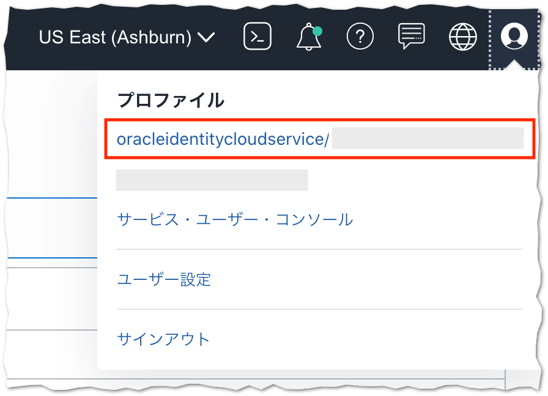
下にスクロールして「リソース」の「認証トークン」に移動し、「トークンの生成」ボタンをクリックします。

下記項目を入力して、「トークンの生成」ボタンをクリックします。
- 説明：OKE ATP

受講者の方へ
生成されたトークンは一回のみ表示されます。
「コピー」をクリックしてトークンがコピーされ、どこに保存してください。完了したら、「閉じる」ボタンをクリックします。（注：忘れたときは作成されたトークンを削除して、再度生成してください。）

8.OKEクラスターOCID
OKEハンズオン事前準備の手順により作成したOKEクラスターのOCIDを取得します。
OCIコンソールにログインします。
左上のハンバーガーメニューをクリックし、”開発者サービス”の”Kubernetes Clusters (OKE)”をクリックします。

作成したOKEクラスターをクリックします。
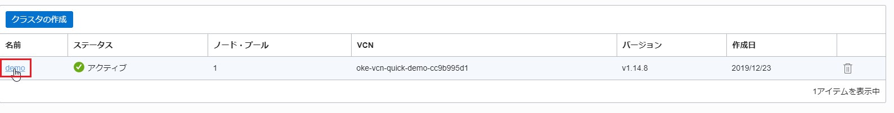
赤枠部分をクリックし、OKEクラスターOCIDをコピーします。
コピーした値をメモしておいてください。

これで、ワークショップで利用するアカウント情報の収集が完了しました。
受講者の方へ
ここから先の手順では、Visual Builder Studioのセットアップまでを完了している必要があります。
Visual Builder Studioインスタンス作成後のセットアップ手順を実施していない場合は、そちらを実施してください。
4.プロジェクトとリポジトリの作成
このステップでは、GitHubリポジトリに基づいてVisual Builder Studioで新しい開発者プロジェクトをセットアップする方法を説明します。
一つのVisual Builder Studioのインスタンスは、複数のプロジェクトを管理できます。また、一つのプロジェクトは複数のリポジトリを管理できます。
プロジェクトを作成するには、「組織」(もしくは「Organization」)メニューを選択し、「プロジェクト」(もしくは「Projects」)タブで右側の「＋作成」(もしくは「Create」)ボタンをクリックします。

下記項目を入力して、「次へ」(もしくは「Next」)をクリックします。
- 名前：OKEATPWorkshop
- 利用する言語は必要に応じて変更してください
受講者の方へ
Visual Builder Studio上のプロジェクト名の重複は許容されていません。
集合ハンズオンなど同一の環境でハンズオンを実施されている方は、プロジェクト名が重複しない様に語尾に任意の文字列(名前のイニシャル等)を追加してください。
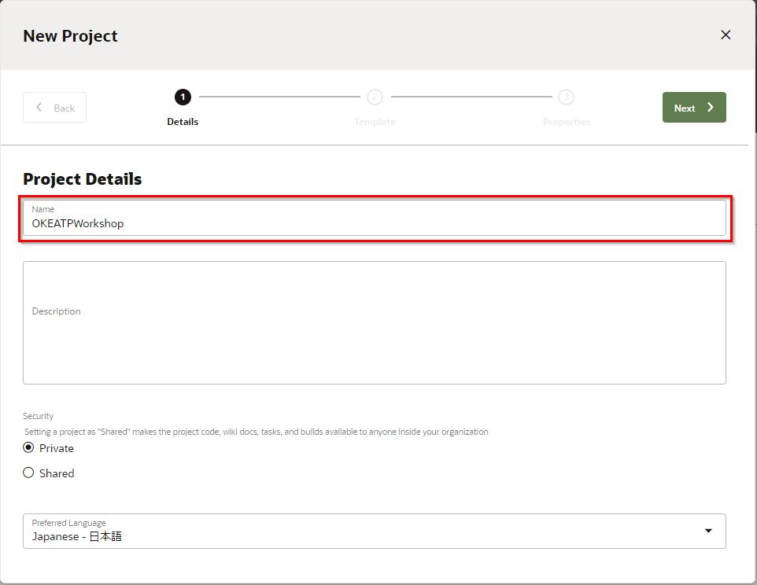
デフォルトのままにして、「次へ」(もしくは「Next」)をクリックします。

デフォルトのままにして、「終了」(もしくは「Finish」)をクリックします。

すべてのモジュールがプロビジョニングされるまで、数分程度お待ちください。

プロジェクトの作成が完了すると、自動的にこちらの画面に移動されます。
続いて、レポジトリを作成します。
リポジトリを作成するには、画面右側の「＋リポジトリの作成」(もしくは「Create Repository」)をクリックします。

下記項目を入力して、「作成」をクリックします。
| key | value |
|---|---|
| 名前 | oke_atp_workshop |
| 説明 | OKE ATP Workshop |
| 既存のリポジトリのインポート(既存のリポジトリのインポート(Import existing repository)にチェック) | https://github.com/oracle-japan/oke-atp-helidon-handson |

インポートが完了すると、既存のリポジトリのファイルがインポートされます。
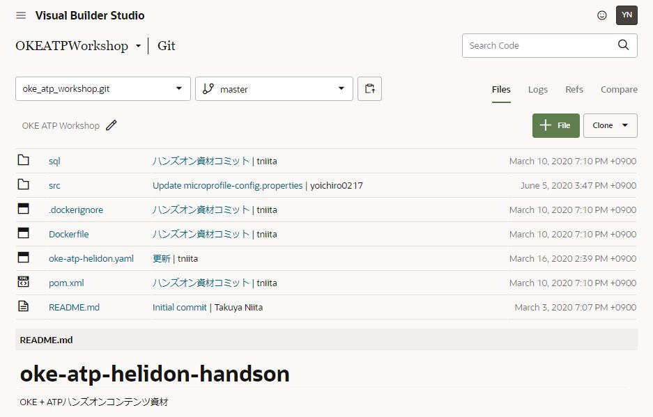
Visual Builder Studioで「Git」に移動して、右側の「クローン」を選択し、”Clone with HTTPS.”の「コピー」アイコンをクリックします。

Cloud Shellを起動し、git cloneを実行します。
受講者の方へ
別途クライアント環境を作成された方は作成した環境にログインし、ホームディレクトリ(/home/opc)からコマンドを実行してください。
git clone コピーされたURL
受講者の方へ
git cloneコマンドや後続の手順で利用するgit pushなどの各種gitコマンドにおいてパスワードの入力を求められることがあります。
その場合は、ご自身のご利用されているOracle Cloudアカウントに対応するパスワードを入力してください。
これで、Visual Builder Studioでプロジェクトとリポジトリの作成は完了しました。
5.ビルド用の仮想マシンの準備
このステップでは、Visual Builder Studioでのビルド機能（CI/CD）を使用する際に必要なビルド用の仮想マシンを用意します。
Visual Builder Studioで「組織」メニューを選択し、「仮想マシン・テンプレート」のタブに移動して、「＋作成」ボタンをクリックします。

ダイアログボックスで、下記項目を入力して、「作成」ボタンをクリックします。
| key | value |
|---|---|
| 名前 | OKE |
| プラットフォーム | Oracle Linux 7 |
受講者の方へ
Visual Builder Studio上の仮想マシン・テンプレート名の重複は許容されていません。
集合ハンズオンなど同一の環境でハンズオンを実施されている方は、仮想マシン・テンプレート名が重複しない様に語尾に任意の文字列(名前のイニシャル等)を追加してください。

作成したテンプレート”OKE”を選択し、「ソフトウェアの構成」(もしくは「Configure Software」)ボタンをクリックして、必要なソフトウェアパッケージを追加します。

次のパッケージを選択します。
- Docker 19
- Kubectl
- OCIcli ==> Python3 も同時にインストールするように求められます
- SQLcl
「完了」ボタンをクリックします。

「仮想マシンのビルド」タブに移動します。 「＋作成」ボタンをクリックします。

表示されるダイアログで、下記項目を入力します。
| key | value |
|---|---|
| 数量 | 1 |
| VMテンプレート | OKE |
| リージョン | us-ashburn-1 |
| シェイプ | VM.Standard.E2.1 |
| VCN選択 | “デフォルト”を選択 |
「追加」ボタンをクリックします。
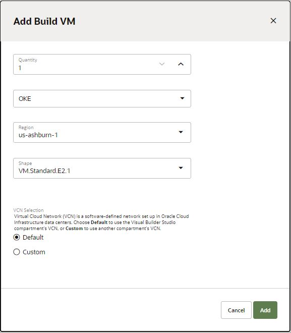
仮想マシンが追加されました。
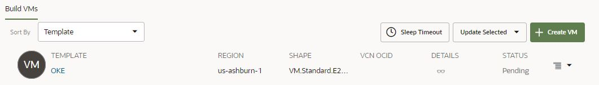
続いて作成した仮想マシンを起動します。 作成した仮想マシンの右側にあるメニューから「起動」を選択します。

起動までしばらく時間がかかるので、先の手順を進めてください。
これで、Visual Builder Studioのセットアップのすべては完了しました。
6.ATPのプロビジョニングとATP接続情報の作成
このステップでは、OCIコンソールからATPをプロビジョニングし、OKEから接続するための事前準備を行います。
以下手順で実行します。
- OCIコンソールからATPをプロビジョニングする
- OCI CLIコマンドを利用してWalletファイルを作成し、ConfigmapリソースとしてOKEに登録する
- ATP接続情報としてユーザ名とパスワードを作成し、SecretリソースとしてOKEに登録する
6-1. OCIコンソールからATPをプロビジョニングする
ここでは、OCIコンソールからATPのプロビジョニングを行います。
OCIコンソールにログインし、ハンバーガーメニューから”Oracle Database”⇒”Autonomous Tsanraction Processing”をクリックします。

“Autonomous Databaseの作成”ボタンをクリックします。

以下の情報を入力します。
| key | value |
|---|---|
| コンパートメント | ルートコンパートメント |
| 表示名 | OCIコンソール上でATPを表示するための名前を入力します。今回は”tfOKEATPDB” |
| データベース名 | データベース名を入力します。今回は”tfOKEATPDB” |
トライアル環境以外の環境をお使いの方へ
Autonomous Databaseはデータベース名の重複が許容されていません。
集合ハンズオンなど同一の環境でハンズオンを実施されている方は、データベース名が重複しない様に語尾に任意の文字列(名前のイニシャル等)を追加するなどして重複しない名前にしてください。
| key | value |
|---|---|
| ワークロード・タイプの選択 | ワークロードをデータウェアハウス、トランザクション処理、JSON、APEXの中から選択します。今回は”トランザクション処理” |
| デプロイメント・タイプの選択 | データベースのインフラストラクチャを共有とするか専用とするかを選択します。今回は”共有インフラストラクチャ” |
| データベース・バージョンの選択 | データベースのバージョンを選択します。今回は”19c”を選択 |
| OCPU数 | データベースのコア数を入力します。今回は”1”を入力 |
| ストレージ(TB) | データベースのストレージ容量を入力します。今回は”1”を入力 |
| 自動スケーリング | ワークロードの負荷に応じて自動でスケールを行うかどうかを選択します。今回はチェックを入れます。 |
| パスワード | データベースのパスワードを入力します。今回は”TFWorkshop__2000” |
| パスワードの確認 | 確認のためにパスワードを再度入力します。今回は”TFWorkshop__2000” |
| ネットワーク・アクセスの選択 | データベースに対してどこからのアクセスを許可するかを選択します。今回は”すべての場所からのセキュア・アクセスを許可”を選択 |
| ライセンス・タイプの選択 | ライセンスのタイプを選択します。今回は”ライセンス込み”を選択 |
上記を入力し終えたら、”Autonomous Databaseの作成”をクリックします。
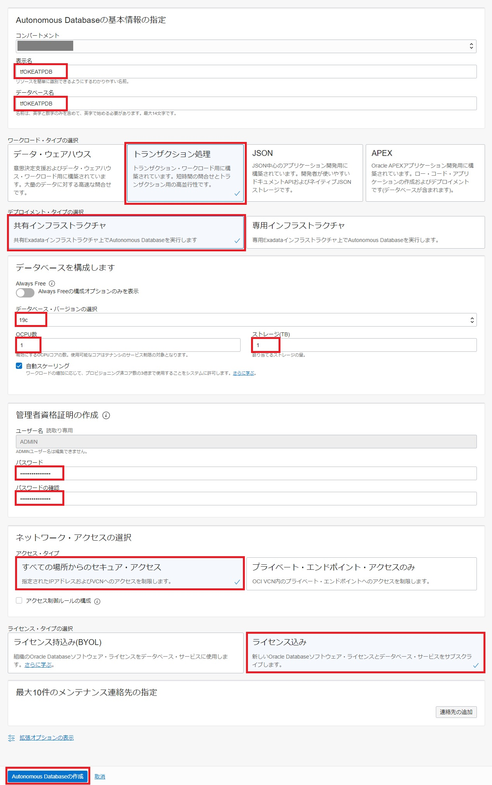
ATPのプロビジョニングが開始されます。ステータスが”使用可能”になればプロビジョニング完了です。完了するまで10-15分程度かかることがあります。
最後にプロビジョニングしたATPのOCIDを確認しておきます。(このOCIDは次の手順で使用します)
“Autonomous Database情報”の”OCID”の”コピー”ボタンをクリックし、OCIDをコピーします。

これで、ATPのプロビジョニングは完了です。
6-2. ATPのWalletファイルの作成
ATPに接続するため資格情報となるWalletファイルを作成します。
受講者の方へ
Walletファイルについてはマニュアルをご確認ください。
なお、Walletファイルはzipファイルです。
Cloud Shellを起動します。
受講者の方へ
別途クライアント環境を作成された方は作成した環境にログインし、ホームディレクトリ(/home/opc)からコマンドを実行してください。
oke_atp_workshopディレクトリに移動します。
cd oke_atp_workshop
以下のコマンドを実行します。
oci db autonomous-database generate-wallet --autonomous-database-id [ATPのOCID] --password [Walletのパスワード] --file [Walletファイル名]
今回は以下のように実行します。[ATPのOCID]は、1. OCIコンソールからATPをプロビジョニングするでコピーしたATPのOCIDに書き換えてください。
oci db autonomous-database generate-wallet --autonomous-database-id [ATPのOCID] --password TFWorkshop__2000 --file Wallet_tfOKEATPDB.zip
カレントディレクトリにWalletファイルが作成されます。
以下のコマンドで解凍します。
unzip Wallet_tfOKEATPDB.zip -d Wallet_tfOKEATPDB
OKEにでデプロイするアプリケーションからWalletファイルを読み込むために解凍したディレクトリをKubernetesをConfigmapリソースとして登録します。
Configmapについて
Configmapリソースについてはこちらをご確認ください。
kubectl create configmap okeatp --from-file=Wallet_tfOKEATPDB
Configmapを誤って作成してしまった場合
誤って作成してしまった場合等に削除する場合は以下のコマンドを実行。
kubectl delete configmap <configmap名>
後続の手順で、Visual Builder Studioからサンプルデータを登録するためにWalletファイルをVisual Builder StudioのGitレポジトリに登録します。
git add Wallet_tfOKEATPDB.zip
git commit -m "Walletファイルの追加"
commit時に表示されるメッセージ
コミットする際に以下のようなメッセージが表示されることがあります。
*** Please tell me who you are.
Run
git config --global user.email "you@example.com"
git config --global user.name "Your Name"
to set your account's default identity.
Omit --global to set the identity only in this repository.
その場合は以下のコマンドを実行後に再度コミットを行ってください。
git config --global user.email <自身のメールアドレス>
git config --global user.name <ユーザ名(任意)>
git push
先ほど解凍したWalletファイルについては不要なので、削除しておきます。
rm -rf Wallet_tfOKEATPDB
6-3.ATPのユーザの作成
1. OCIコンソールからATPをプロビジョニングするでは、デフォルトユーザとして”Admin”ユーザでデータベースが作成されます。
ほとんどの場合、アプリケーションがデータベースを利用する際は”Admin”ではなく、別ユーザを作成します。
今回も同様に、ATPを利用するためのデータベースユーザを作成しましょう。
今回のハンズオンでは、ATPのユーザとパスワードを環境変数としてアプリケーションに読み込ませるように設定しています。
ここでは、ATPのユーザとパスワードを環境変数として作成するためにSecretリソースを作成します。
Secretについて
Secretリソースについてはこちらをご確認ください。
今回は、ATPのユーザを”handson”、パスワードを”Welcome12345”として作成します。
kubectl create secret generic customized-db-cred \
--from-literal=user_name=handson \
--from-literal=password=Welcome12345
Secretを誤って作成してしまった場合
誤って作成してしまった場合等に削除する場合は以下のコマンドを実行。
kubectl delete secret <secret名>
以上で、ATPのユーザとパスワードの設定は完了です。
7.ATPへのサンプルデータ登録
このステップでは、Visual Builder Studioのビルド機能（CI/CD）を使用して、いくつかのテーブルを作成し、ATPにサンプルデータを登録します。
下記手順で実行します。
- ビルドジョブを作成、実行し、データベースオブジェクトを作成する
- SQL Developer Webを介して検証する
7-1. ビルドジョブを作成と実行
Visual Builder Studioで、「ビルド」に移動し、「＋ジョブを作成」ボタンをクリックします。

下記項目を入力し、「作成」ボタンをクリックします。
| key | value |
|---|---|
| 名前 | CreateDBObjects |
| テンプレート | OKE |

gitソースリポジトリを追加します。「Git追加」から「git」を選択します。

下記項目を入力します。
- リポジトリ：oke_atp_workshopを選択する

次にステップを追加します。「ステップ」をクリックし、「ステップの追加」から「SQLcl」を選択します。
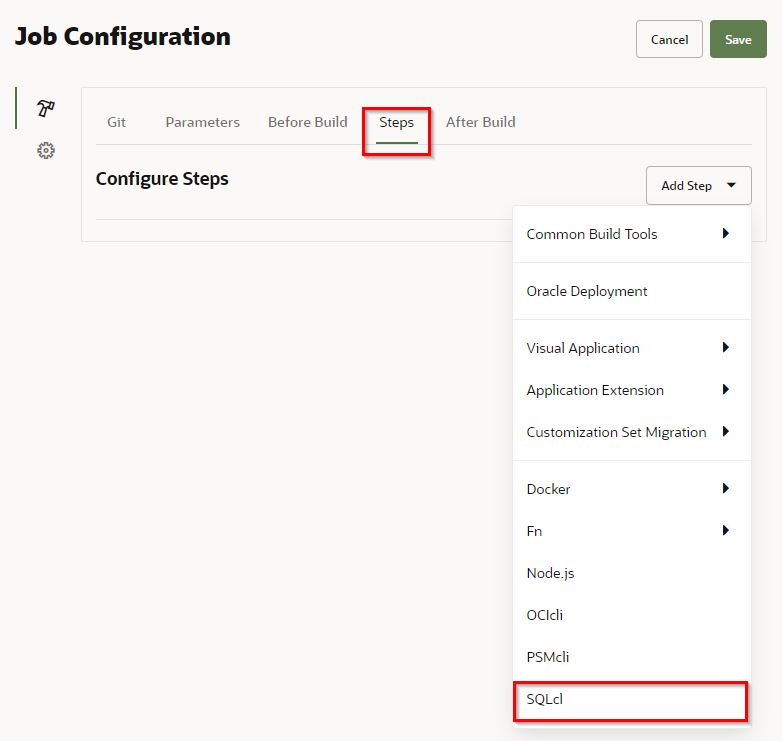
下記項目を入力して、「保存」ボタンをクリックします。
| key | value |
|---|---|
| ユーザー名 | データベースユーザ名。今回は”admin” |
| パスワード | データベースパスワードを設定。今回は”TFWorkshop__2000” |
| 資格証明ファイル | ウォレットファイルを指定。今回は”./Wallet_tfOKEATPDB.zip” |
| 接続文字列 | データベースの名前＆”_high”/”_low”などで構成される接続文字列。今回は”tfOKEATPDB_HIGH” |
| SQLファイル・パス | 作成スクリプトを含むsqlファイルのパス。今回は”sql/create_schema.sql” |
受講者の方へ
トライアル環境以外の環境をお使いの方は、ATPプロビジョニング時にATPのデータベース名を変更している場合があります。
その場合は、接続文字列”tfOKEATPDB_HIGH”を変更する必要があります。
“_HIGH”以前の文字列がデータベース名になっておりますので、ご自身が変更したデータベース名に合わせてください。
例えば、ATPデータベース名が”tfOKEATPDB1234”の場合は、接続識別子は”tfOKEATPDB1234_HIGH”となります。
受講者の方へ
“sql/create_schema.sql”では、ATPに対して”handson”という名前のスキーマ(ユーザ)を作成しています。
この後の手順でデプロイするアプリケーションでは”sql/create_schema.sql”によって作成されるスキーマのテーブルを使用します。

「今すぐビルド」ボタンをクリックします。
これが環境内で最初のビルドジョブである場合、ビルドエンジンの起動が完了するまでに最大15分程度かかる場合があります。
受講者の方へ
ビルドエンジンの起動に時間がかかるので、先にDockerイメージを作成とOCIRへの登録を実施してください。

ビルド途中または完了、「ビルド・ログ」アイコンをクリックして、ログを確認できます。

成功すると、ログの最後に”Status:DONE Result:SUCCESSFUL”と表示されます。また、SQL実行の詳細な内容を確認できます。

ビルドマシンのログも確認できます。
Visual Builder Studioで、「組織」⇒「仮想マシンのビルド」⇒「VMのビルド」で使用したテンプレートを選択して、右側のメニューアイコンから「ログの表示」を選択します。

仮想マシンのログが表示されます。

これで、サンプルデータの登録は完了しました。
7-2. サンプルデータの確認
SQL Developer Webを使用してATPに接続し、オブジェクトが正しく作成されたことを確認できます。
OCIのATPインスタンスの詳細⇒「サービス・コンソール」ボタンをクリックします。

「Development」(日本語の場合は「開発」)をクリックします。

「データベース・アクション」をクリックします。

下記項目を入力し、「次」をクリックします。
- Username：ATPデータベースのユーザー名。今回は”admin”

下記項目を入力し、「Sign in」をクリックします。
| key | value |
|---|---|
| Username | ATPデータベースのユーザー名。今回は”admin” |
| Password | ATPデータベースのパスワード。今回は”TFWorkshop__2000” |

「SQL」をクリックします。

ログインしたら、画面右の”ナビゲータ”タブをクリックし、1.ビルドジョブを作成、実行し、データベースオブジェクトを作成するで作成した”HANDSON”スキーマを選択します。

SQL Developer WebのWorksheetでselect * from HANDSON.ITEMSを入力して、緑色の矢印「文の実行」アイコンをクリックします。
ITEMSテーブルの結果が表示されます。

これで、サンプルデータの登録および確認は完了しました。
8.Dockerイメージを作成とOCIRへの登録
このステップでは、Visual Builder Studio上でJava Webアプリケーション（データソースとしてATPデータベースを使用）のDockerイメージを作成する方法を説明します。
今回は、Oracle JETとHelidonで作成したサンプルアプリケーションを使用してコンテナイメージを作成します。
受講者の方へ
Oracle JETは、Oracleが開発するフロントエンドUIを迅速に構築するためのJavaScriptベースのツールキットです。
Helidonは、Oracleが提供するオープンソースのマイクロサービス・アプリケーションフレームワークです。
Oracle JETとHelidonについての詳細はそれぞれのリンクをご確認ください.
以下手順で実行します。
- OCIRリポジトリへの接続を構成する
- イメージを作成・プッシュするためのDockerビルドジョブを構成する
- ビルドジョブを実行する
8-1. OCIRリポジトリへの接続の構成
Visual Builder Studioで「Docker」に移動して、「外部レジストリのリンク」ボタンをクリックします。
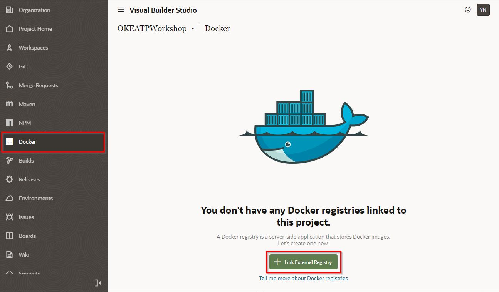
下記項目を入力して、「作成」ボタンをクリックします。
| key | value |
|---|---|
| レジストリ名 | “WorkshopOCIR” |
| レジストリURL | https://<リージョンコード>.ocir.io |
| 説明 | “OKE ATP” |
| 認証 | 基本を選択 |
| ユーザー名 | <オブジェクト・ストレージ・ネームスペース>/oracleidentitycloudservice/<ユーザ名> |
| パスワード | 認証トークン |
リージョンコードについては、ご自身の環境に合わせて設定してください。今回は”iad”を設定します。
| リージョン | リージョンコード |
|---|---|
| ap-tokyo-1 | nrt |
| ap-osaka-1 | kix |
| ap-melbourne-1 | mel |
| eu-amsterdam-1 | ams |
| me-jeddah-1 | jed |
| us-ashburn-1 | iad |
| us-phoenix-1 | phx |
| ap-mumbai-1 | bom |
| ap-seoul-1 | icn |
| ap-sydney-1 | syd |
| ca-toronto-1 | yyz |
| eu-frankfurt-1 | fra |
| eu-zurich-1 | zrh |
| sa-saopaulo-1 | gru |
| uk-london-1 | lhr |

成功すると、外部レジストリの情報が表示されます。

8-2. ビルドジョブの構成
「ビルド」に移動して、「＋ジョブの作成」をクリックします。

下記項目を入力して、「作成」ボタンをクリックします。
| key | value |
|---|---|
| 名前 | ジョブ名。今回はJavaDockerOCIR |
| 説明 | ジョブの説明。”Build and push Docker image to OCIR” |
| テンプレート | OKE |

右側の「Git追加」から「Git」を選択します。

下記項目を入力します。
次のステップを追加します。
| key | value |
|---|---|
| リポジトリ | oke_atp_workshopを選択する |
| SCMコミット時に自動的にビルドを実行 | チェックオンにする |
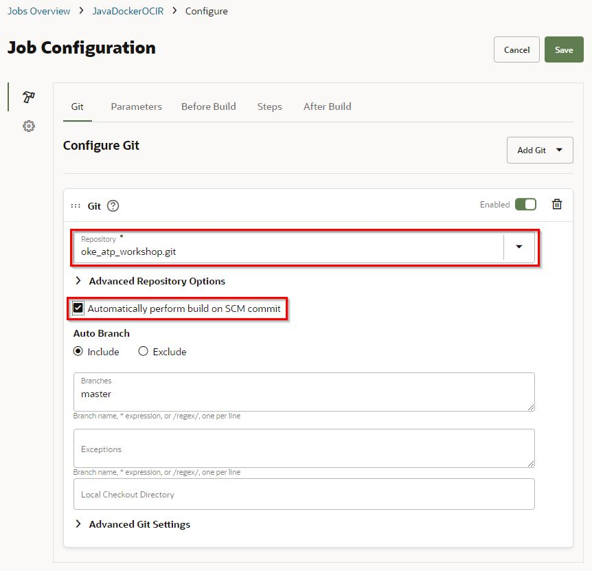
「ステップ」タブに移動し、「ステップの追加」から「Docker」⇒「Dockerログイン」を選択します。

下記項目を入力します。
- レジストリ・ホスト：”WorkshopOCIR”
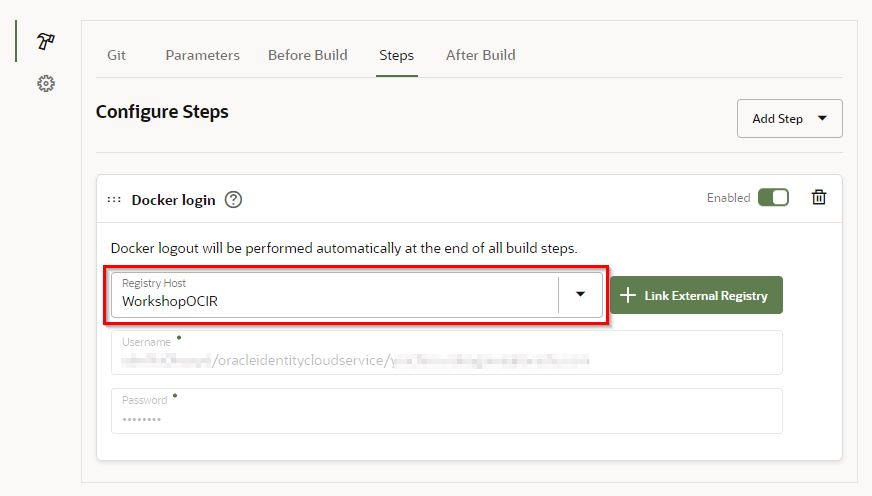
「ステップの追加」から「Docker」⇒「Dockerビルド」を選択します。

下記項目を入力します。
| key | value |
|---|---|
| レジストリ・ホスト | “WorkshopOCIR” |
| イメージ名 | <オブジェクト・ストレージ・ネームスペース>/workshop/okeatpapp |
受講者の方へ
トライアル環境以外の環境をお使いの方は、イメージが他のユーザの方と重複しないように、語尾に任意の文字列(名前のイニシャル等)を追加するなどして重複しない名前にしてください。
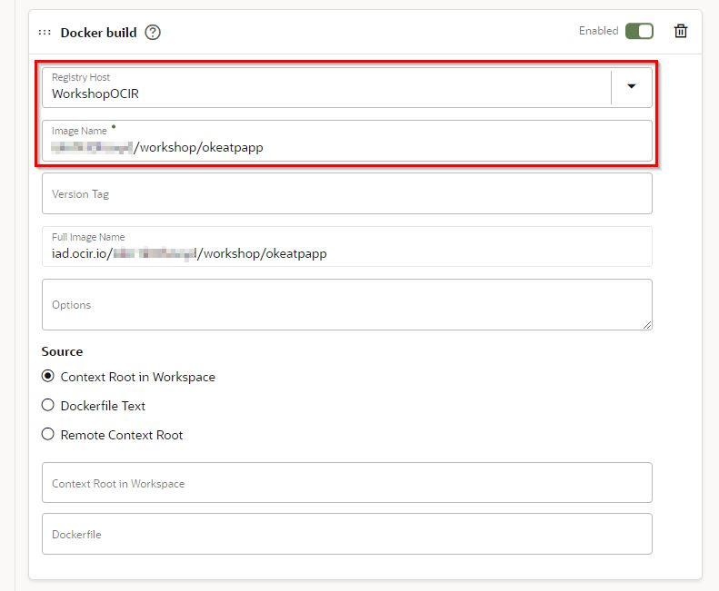
「ステップの追加」から「Docker」⇒「Dockerプッシュ」を選択します。
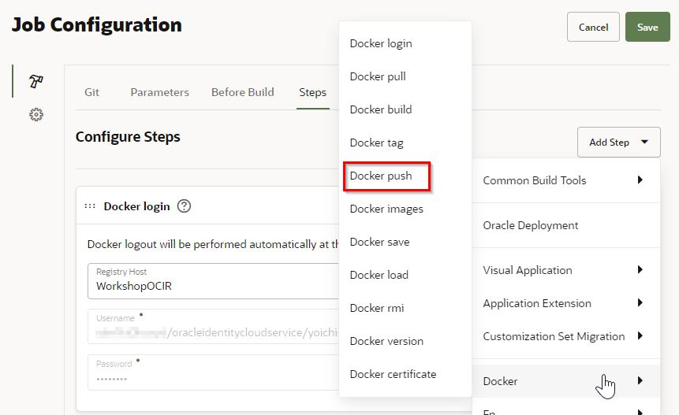
下記項目を入力します。
| key | value |
|---|---|
| レジストリ・ホスト | “WorkshopOCIR” |
| イメージ名 | <オブジェクト・ストレージ・ネームスペース>/workshop/okeatpapp |

「保存」ボタンをクリックします。

受講者の方へ
ここまでの手順が完了したら、一度ATPへのサンプルデータ登録に戻り、サンプルデータの確認を実施してください。
ジョブが完了していない場合は、完了するまでお待ちください。
8-3. ビルドジョブの実行
「今すぐビルド」ボタンをクリックします。

成功すると、ステータスが になります。
になります。

OCIコンソールから、”開発者サービス”⇒”レジストリ(OCIR)”に移動するとokeatpappのイメージがプッシュされたことを確認できます。

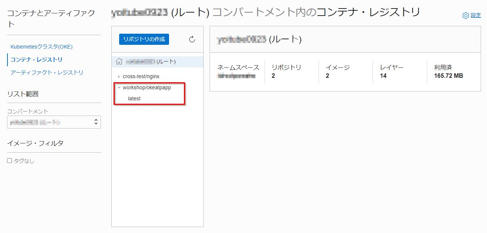
最後にプッシュしたイメージをpullできるようにパブリックにします。
プッシュしたイメージを選択し、”アクション”をクリックします。
“パブリックに変更”をクリックします。

これで、アプリケーションをイメージに作成して、OCIRへの登録は完了しました。
9.OKEクラスタへのデプロイ
このステップでは、新しいビルドジョブを作成して、セットアップしたOKEクラスタにアプリケーションをデプロイします。
以下の手順で実行します。
- yamlファイルの編集
- OKEクラスタにアプリケーションをデプロイするビルドジョブを構成する
- ビルドジョブを実行する
- デプロイしたアプリケーションを検証する
9-1. yamlファイルの編集
アプリケーションのデプロイを行うにあたって、Dockerイメージを作成とOCIRへの登録にて
登録したイメージをyamlに設定します。
Cloud Shellを起動します。
受講者の方へ
別途クライアント環境を作成された方は作成した環境にログインし、ホームディレクトリ(/home/opc)からコマンドを実行してください。
oke-atp-workshopディレクトリに移動します。
直下にある”oke-atp-helidon.yaml”をviなどで開きます。
1
2
3
4
5
6
7
8
9
10
11
12
13
14
15
16
17
18
19
20
21
22
23
24
25
26
27
28
29
30
31
32
33
34
35
36
37
apiVersion: v1
kind: Service
metadata:
name: oke-atp-helidon
namespace: default
spec:
type: LoadBalancer
ports:
- port: 80
protocol: TCP
targetPort: 8080
selector:
app: oke-atp-helidon
---
kind: Deployment
apiVersion: apps/v1
metadata:
name: oke-atp-helidon
spec:
selector:
matchLabels:
app: oke-atp-helidon
replicas: 2
template:
metadata:
labels:
app: oke-atp-helidon
version: v1
spec:
# The credential files in the secret are base64 encoded twice and hence they need to be decoded for the programs to use them.
# This decode-creds initContainer takes care of decoding the files and writing them to a shared volume from which db-app container
# can read them and use it for connecting to ATP.
containers:
- name: oke-atp-helidon
image: iad.ocir.io/orasejapan/workshop/okeatpapp:latest
imagePullPolicy: Always
(以下略)
35行目にpullしてくるイメージのレジストリが設定されています。
この行をDockerイメージを作成とOCIRへの登録にて登録したイメージに設定します。
<リージョンコード>、<オブジェクト・ストレージ・ネームスペース>の部分をご自身の値に書き換えてください。
<リージョンコード>については、OCIRリポジトリへの接続を構成するをご確認ください。
また、イメージ名については、OCIRリポジトリへの接続を構成するにて指定したものになります。
image: <リージョンコード>.ocir.io/<オブジェクト・ストレージ・ネームスペース>/workshop/<ご自身が付与したイメージ名>:latest
次に、サンプルアプリケーションの設定ファイルに定義している接続識別子を変更します。
サンプルアプリケーションの設定ファイルを開きます。
vim src/main/resources/META-INF/microprofile-config.properties
1
2
3
4
5
6
7
8
9
10
11
12
13
14
15
16
17
18
19
20
21
22
23
24
25
26
27
28
29
30
31
32
33
34
#
# Copyright (c) 2018 Oracle and/or its affiliates. All rights reserved.
#
# Licensed under the Apache License, Version 2.0 (the "License");
# you may not use this file except in compliance with the License.
# You may obtain a copy of the License at
#
# http://www.apache.org/licenses/LICENSE-2.0
#
# Unless required by applicable law or agreed to in writing, software
# distributed under the License is distributed on an "AS IS" BASIS,
# WITHOUT WARRANTIES OR CONDITIONS OF ANY KIND, either express or implied.
# See the License for the specific language governing permissions and
# limitations under the License.
#
# Application properties. This is the default greeting
app.greeting=Hello
# Microprofile server properties
server.port=8080
server.host=0.0.0.0
javax.sql.DataSource.workshopDataSource.dataSourceClassName=oracle.jdbc.pool.OracleDataSource
javax.sql.DataSource.workshopDataSource.dataSource.url=jdbc:oracle:thin:@sampledb_high?TNS_ADMIN=/db-demo/creds
javax.sql.DataSource.workshopDataSource.maximumPoolSize=5
javax.sql.DataSource.workshopDataSource.minimumIdle=2
# src/main/resources/web in your source tree
server.static.classpath.location=/web
# default is index.html
server.static.classpath.welcome=index.html
# static content path - default is "/"
# server.static.classpath.context=/static-cp
25行目の設定値”javax.sql.DataSource.workshopDataSource.dataSource.url”の値の接続識別子部分”@sampledb_high”をATPのデータベース名に合わせて修正します。
今回は、ATPデータベース名を”tfOKEATPDB”にしているため、以下のように修正します。
jdbc:oracle:thin:@tfokeatpdb_high?TNS_ADMIN=/db-demo/creds
受講者の方へ
集合ハンズオンなど同一の環境でハンズオンを実施されている方は、前手順でデータベース名が重複しない様に語尾に任意の文字列(名前のイニシャル等)を追加しておりますので、
そちらのデータベース名に合わせて修正してください。
レポジトリのトップディレクトリに戻り、修正したmanifestをレポジトリにpushします。
cd ~/oke_atp_workshop/
git add .
git commit -m "コンテナレジストリの修正"
git push
9-2. ビルドジョブを構成
Visual Builder Studioで、「ビルド」に遷移して、「＋ジョブの作成」ボタンをクリックします。
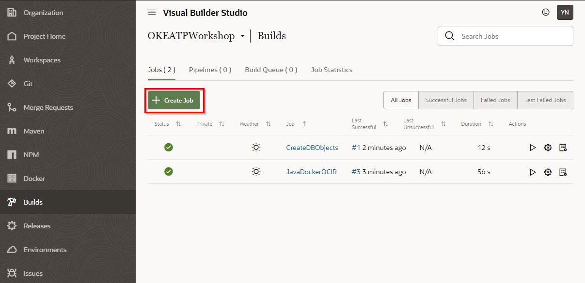
下記項目を入力して、「作成」ボタンをクリックします。
| key | value |
|---|---|
| 名前 | ジョブの名前。今回は”OKEDeploy” |
| 説明 | ジョブの説明。今回は”Deploy application to OKE” |
| テンプレート | OKE |
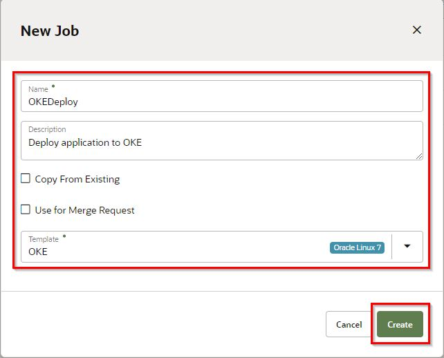
「Git追加」から「Git」を選択します。

下記項目を入力します。
次のステップを追加します。
- リポジトリ：oke_atp_workshopを選択する

「ステップ」タブに移動し、「ステップの追加」から「Docker」⇒「Dockerログイン」を選択します。

下記項目を入力します。
- レジストリ・ホスト：入力したレジストリ名を選択する。今回は”WorkshopOCIR”

「ステップの追加」から「OCIcli」を選択します。
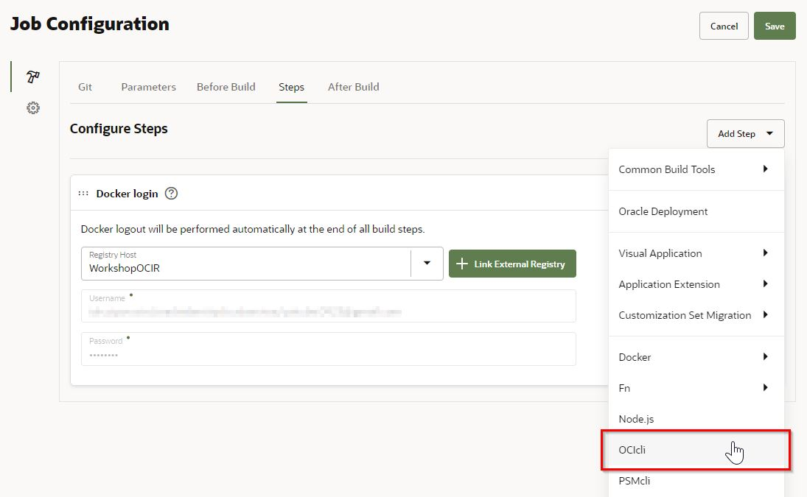
下記項目を入力します。
| key | value |
|---|---|
| ユーザーOCID | ワークショップで利用するアカウント情報の収集で収集したユーザーOCID |
| フィンガープリント | ワークショップで利用するアカウント情報の収集で収集したAPI Signingキーのフィンガープリント |
| テナンシ | ワークショップで利用するアカウント情報の収集で収集したテナンシOCID |
| 秘密キー | OKEハンズオン事前準備でダウンロードしたAPI秘密鍵の内容を貼り付け |
| リージョン | リージョン識別子。自身の環境に合わせて選択。今回は、”us-ashburn-1” |
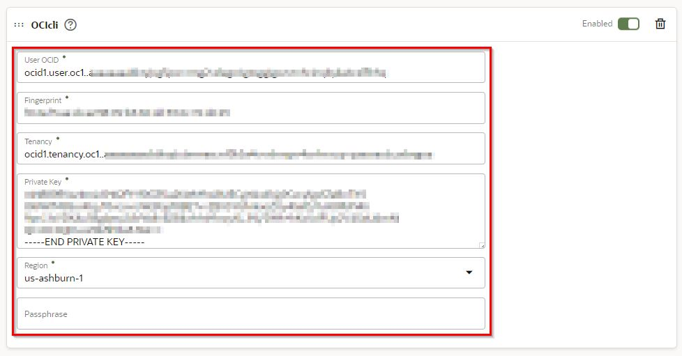
「ステップの追加」から「UNIXシェル」を選択します。

下記項目を入力します。
2行目の<OKEクラスターOCID\>と<リージョン識別子\>は自身の値に置き換えてください。
mkdir -p $HOME/.kube
oci ce cluster create-kubeconfig --cluster-id <OKEクラスターOCID> --file $HOME/.kube/config --region <リージョン識別子> --token-version 2.0.0
export KUBECONFIG=$HOME/.kube/config
kubectl version
kubectl config view
kubectl get nodes
kubectl apply -f oke-atp-helidon.yaml
kubectl rollout restart deployment/oke-atp-helidon
kubectl get services oke-atp-helidon
kubectl get pods
kubectl describe pods
受講者の方へ
この手順で設定するリージョン識別子については、OKEをプロビジョニングしたリージョンのリージョン識別子を使用してください。

「保存」ボタンをクリックします。

9-3.ビルドパイプラインの設定
Visual Builder Studioで、「ビルド」に遷移して、「Pipelines」タブをクリックします。
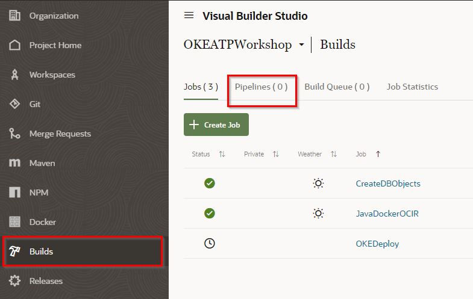
「Create Pipeline」ボタンをクリックします。

以下の項目を入力し、「Create」ボタンをクリックします。
| key | value |
|---|---|
| Name | DeployToOKE |
| Description | DeployToOKE |
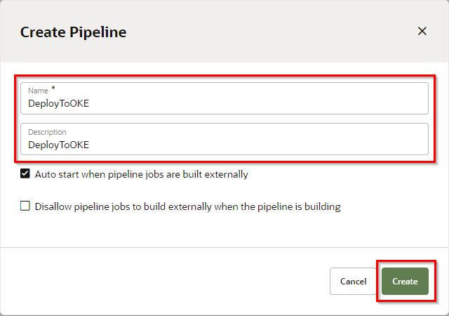
画面左側の「JavaDockerOCIR」と「OKEDeploy」をドラッグ＆ドロップし、下記の図のように並べます。

「Start」から「JavaDockerOCIR」、「JavaDockerOCIR」から「OKEDeploy」をそれぞれドラッグし、パイプラインを作成します。
その後、「Save」ボタンをクリックします。

これで、ビルドパイプラインの作成は完了です。
9-4. ビルドジョブの実行
Visual Builder Studioで、「ビルド」に遷移して、「JavaDockerOCIR」をクリックします。

「今すぐビルド」ボタンをクリックします。

成功すると、ステータスがになります。
「ビルド・ログ」をクリックします。

成功すると、”Status:DONE Result:SUCCESSFUL”が表示されます。

9-5. デプロイしたアプリケーションの検証
kubectl get serviceでOKEクラスタのワーカーノードのパブリックIP（EXTERNAL-IP）を確認します。
NAME STATUS ROLES AGE VERSION INTERNAL-IP EXTERNAL-IP OS-IMAGE KERNEL-VERSION CONTAINER-RUNTIME
10.0.24.2 Ready node 1d v1.13.5 10.0.24.2 xxx.xxx.xxx.xxx Oracle Linux Server 7.6 4.14.35-1902.2.0.el7uek.x86_64 docker://18.9.1
Webブラウザを起動し、http://パブリックIPにアクセスしてみましょう。
Webアプリケーションが表示されたら成功です。

これで、アプリケーションをOKEへのデプロイは完了しました。
10.アプリケーションの再デプロイ
ここでは、アプリケーションの再デプロイを行います。
今回は、トップページのイメージを変更してみましょう。
Cloud Shellを起動します。
受講者の方へ
別途クライアント環境を作成された方は作成した環境にログインし、ホームディレクトリ(/home/opc)からコマンドを実行してください。
oke-atp-workshopディレクトリに移動します。以下のコマンドを実行し、イメージファイルを更新します。
cp src/main/resources/web/images/forsale_new2.jpg src/main/resources/web/images/forsale.jpg
Visual Builder StudioのリポジトリへCommitします。
git add .
git commit -m "トップページのイメージを変更"
git push
Visual Builder Studioの「ビルド」に移動して、ジョブ”JavaDockerOCIR”のビルドが自動的に開始されます。成功すると、ステータスがになります。

次に、ジョブ”OKEDeploy”のビルドが自動的に開始されます。成功すると、ステータスがになります。

Webブラウザを起動し、http://パブリックIPにアクセスしてみましょう。
Webアプリケーションが表示されたら成功です。イメージが変更されたことを確認できます。

以上でハンズオンは終了です。お疲れ様でした！
11.【オプション】今回利用したアプリケーションに関する補足
ここでは、デプロイに使用したmanifestファイル(oke-atp-helidon.yaml)の詳細について解説します。
今回は、ATPのユーザ名とパスワードをkubernetesのSecretリソースとして作成し、それらをコンテナ上の環境変数として読み込みアプリケーションで使用しました。
今回のハンズオンでは、以下のmanifestを利用しました。
oke-atp-helidon-handson/oke-atp-helidon.yaml
上記manifestファイルは以下のようになっています。
1
2
3
4
5
6
7
8
9
10
11
12
13
14
15
16
17
18
19
20
21
22
23
24
25
26
27
28
29
30
31
32
33
34
35
36
37
38
39
40
41
42
43
44
45
46
47
48
49
50
51
52
53
54
55
56
57
58
apiVersion: v1
kind: Service
metadata:
name: oke-atp-helidon
namespace: default
spec:
type: LoadBalancer
ports:
- port: 80
protocol: TCP
targetPort: 8080
selector:
app: oke-atp-helidon
---
kind: Deployment
apiVersion: apps/v1
metadata:
name: oke-atp-helidon
spec:
selector:
matchLabels:
app: oke-atp-helidon
replicas: 2
template:
metadata:
labels:
app: oke-atp-helidon
version: v1
spec:
# The credential files in the secret are base64 encoded twice and hence they need to be decoded for the programs to use them.
# This decode-creds initContainer takes care of decoding the files and writing them to a shared volume from which db-app container
# can read them and use it for connecting to ATP.
containers:
- name: oke-atp-helidon
image: iad.ocir.io/orasejapan/workshop/okeatpapp:latest
imagePullPolicy: Always
ports:
- containerPort: 8080
env:
- name: javax.sql.DataSource.workshopDataSource.dataSource.user
valueFrom:
secretKeyRef:
name: customized-db-cred
key: user_name
- name: javax.sql.DataSource.workshopDataSource.dataSource.password
valueFrom:
secretKeyRef:
name: customized-db-cred
key: password
volumeMounts:
- name: handson
mountPath: /db-demo/creds
imagePullSecrets:
- name: workshop-ocirsecret
volumes:
- name: handson
configMap:
name: okeatp
40-49行目に注目してみましょう。 以下の行は、データベースのユーザとパスワードをコンテナにおける環境変数として設定しており、その値をcustomized-db-credというSecretから読み込んでいます。
- name: javax_sql_DataSource_workshopDataSource_dataSource_user
valueFrom:
secretKeyRef:
name: customized-db-cred
key: user_name
- name: javax_sql_DataSource_workshopDataSource_dataSource_password
valueFrom:
secretKeyRef:
name: customized-db-cred
key: password
今回の場合は、ユーザ名をjavax_sql_DataSource_workshopDataSource_dataSource_user、パスワードをjavax_sql_DataSource_workshopDataSource_dataSource_passwordという名前の環境変数としてそれぞれSecretリソースから読み込んでいます。
今回は”customized-db-cred”というSecretリソースをATPユーザの作成の手順で作成しました。
このようにkubernetesでは、アプリケーションで使用する機密情報をSecretリソースとして隠蔽し、その値を環境変数として読み込ませることができます。
詳細については公式ドキュメントをご確認ください。
次にWalletファイルについて解説します。
再度manifestファイルを確認してみましょう。
1
2
3
4
5
6
7
8
9
10
11
12
13
14
15
16
17
18
19
20
21
22
23
24
25
26
27
28
29
30
31
32
33
34
35
36
37
38
39
40
41
42
43
44
45
46
47
48
49
50
51
52
53
54
55
56
57
58
apiVersion: v1
kind: Service
metadata:
name: oke-atp-helidon
namespace: default
spec:
type: LoadBalancer
ports:
- port: 80
protocol: TCP
targetPort: 8080
selector:
app: oke-atp-helidon
---
kind: Deployment
apiVersion: apps/v1
metadata:
name: oke-atp-helidon
spec:
selector:
matchLabels:
app: oke-atp-helidon
replicas: 2
template:
metadata:
labels:
app: oke-atp-helidon
version: v1
spec:
# The credential files in the secret are base64 encoded twice and hence they need to be decoded for the programs to use them.
# This decode-creds initContainer takes care of decoding the files and writing them to a shared volume from which db-app container
# can read them and use it for connecting to ATP.
containers:
- name: oke-atp-helidon
image: iad.ocir.io/orasejapan/workshop/okeatpapp:latest
imagePullPolicy: Always
ports:
- containerPort: 8080
env:
- name: javax.sql.DataSource.workshopDataSource.dataSource.user
valueFrom:
secretKeyRef:
name: customized-db-cred
key: user_name
- name: javax.sql.DataSource.workshopDataSource.dataSource.password
valueFrom:
secretKeyRef:
name: customized-db-cred
key: password
volumeMounts:
- name: handson
mountPath: /db-demo/creds
imagePullSecrets:
- name: workshop-ocirsecret
volumes:
- name: handson
configMap:
name: okeatp
50-56行目に注目してみましょう。
volumeMounts:
- name: handson
mountPath: /db-demo/creds
volumes:
- name: handson
configMap:
name: okeatp
今回は”okeatp”というConfigmapリソースをATPユーザの作成の手順で作成しました。
ここで作成したリソースを53-56行目で”handson”という名前でPodのボリュームに保持しています。
また、50-52行目では、上記で設定した”handson”リソースをコンテナ上の”/db-demo/creds”というパスにマウントしています。
今回は、このマウントしたリソースを構成ファイル(oke-atp-helidon-handson/src/main/resources/META-INF/microprofile-config.properties)で利用しています。
1
2
3
4
5
6
7
8
9
10
11
12
13
14
15
16
17
18
19
20
21
22
23
24
25
26
27
28
29
30
31
#
# Copyright (c) 2018 Oracle and/or its affiliates. All rights reserved.
#
# Licensed under the Apache License, Version 2.0 (the "License");
# you may not use this file except in compliance with the License.
# You may obtain a copy of the License at
#
# http://www.apache.org/licenses/LICENSE-2.0
#
# Unless required by applicable law or agreed to in writing, software
# distributed under the License is distributed on an "AS IS" BASIS,
# WITHOUT WARRANTIES OR CONDITIONS OF ANY KIND, either express or implied.
# See the License for the specific language governing permissions and
# limitations under the License.
#
# Microprofile server properties
server.port=8080
server.host=0.0.0.0
javax.sql.DataSource.workshopDataSource.dataSourceClassName=oracle.jdbc.pool.OracleDataSource
javax.sql.DataSource.workshopDataSource.dataSource.url=jdbc:oracle:thin:@tfokeatpdb_high?TNS_ADMIN=/db-demo/creds
javax.sql.DataSource.workshopDataSource.maximumPoolSize=5
javax.sql.DataSource.workshopDataSource.minimumIdle=2
# src/main/resources/web in your source tree
server.static.classpath.location=/web
# default is index.html
server.static.classpath.welcome=index.html
# static content path - default is "/"
# server.static.classpath.context=/static-cp
22行目に注目してみましょう。
javax.sql.DataSource.workshopDataSource.dataSource.url=jdbc:oracle:thin:@Demo_HIGH?TNS_ADMIN=/db-demo/creds
jdbc:oracle:thin:@Demo_HIGH?TNS_ADMIN=/db-demo/credsがWalletファイルを読み込んでいる部分になります。
ここに先ほどmanifestでマウントしたパスが設定されています。
これでアプリケーションからKubernetesのConfigmapに設定したWalletファイルを利用することができます。
12.【オプション】Service Brokerを使用したATPのプロビジョニング
このステップでは、Service Brokerを使用してOKEからATPをプロビジョニングする方法について説明します。
Service Broker、Service CatalogおよびOCI Service Brokerについて、説明します。
-
Service Brokerは、サードパーティが提供および管理する一連の管理サービスのエンドポイントです。
-
Service Catalogは、Kubernetesクラスタで実行されているアプリケーションが、クラウドプロバイダーが提供するデータストアサービスなどの外部管理ソフトウェアを簡単に使用できるようにする拡張APIです。
-
OCI Service Brokerは、OCI（Oracle Cloud Infrastructure）サービス用のOpen Service Broker API Specのオープンソース実装です。
ユーザはこの実装を使用して、Oracle Container Engine for Kubernetesまたは他のKubernetesクラスタにOpen Service Brokerをインストールできます。
このステップが完了すると以下の絵のような構成になります。

12-1. helmをインストールする
以下の図の赤枠部分をインストールします。
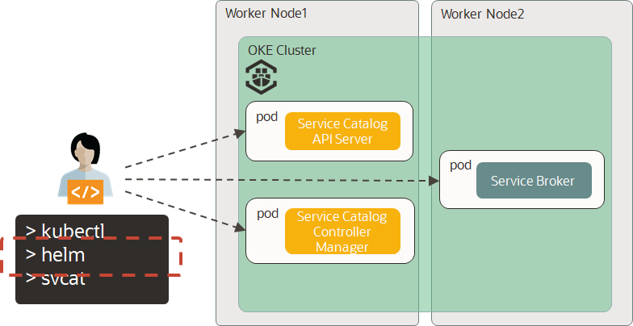
ServiceBrokerを利用するためにhelmをインストールします。
curl https://raw.githubusercontent.com/helm/helm/master/scripts/get-helm-3 | bash
helmバージョン情報を確認します。
helm version
以下のように表示されていれば、helmがインストールされています。
version.BuildInfo{Version:"v3.0.2", GitCommit:"19e47ee3283ae98139d98460de796c1be1e3975f", GitTreeState:"clean", GoVersion:"go1.13.5"}
これで、helmのインストールは完了しました。
12-2. Service Catalogとsvcatツールをインストールする
以下の図の赤枠部分をインストールします。
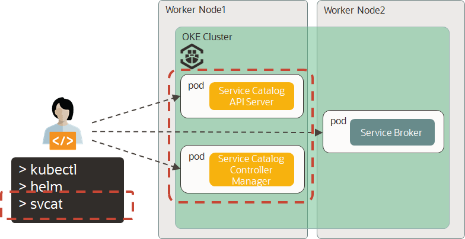
Service Catalogのリポジトリを追加します。
Service Catalogについて
Service Catalogの詳細についてはこちらをご確認ください。
helm repo add svc-cat https://svc-catalog-charts.storage.googleapis.com
Service Catalogをインストールします。
helm install catalog svc-cat/catalog --set controllerManager.verbosity="4" --timeout 300s
svcatツールをインストールします。
“svcat”は、Service Catalogリソースを操作するためのコマンドラインインターフェイス（CLI）です。
curl -sLO https://download.svcat.sh/cli/latest/linux/amd64/svcat
chmod +x ./svcat
sudo mv ./svcat /usr/local/bin/
svcatツールのクライアントバージョン情報を確認します。
svcat version --client
svcatのクライアントバージョン情報が出力されることを確認します。
Client Version: v0.3.0-beta.2
これで、Service Catalogとsvcatツールのインストールは完了しました。
12-3. OCI Service Brokerをインストールする
以下の図の赤枠部分をインストールします。

oke-atp-workshopディレクトリに移動して、OCI Service Brokerリポジトリのクローンを実行します。
git clone https://github.com/oracle/oci-service-broker.git
oci-service-brokerディレクトリに移動します。
cd oci-service-broker
OCI Service Brokerをインストールするのは、ociアカウント情報などが含まれるSecretを作成する必要があります。該当Secretを作成します。
kubectl create secret generic ocicredentials \
--from-literal=tenancy=<tenancy_ocid> \
--from-literal=user=<user_ocid> \
--from-literal=fingerprint=<fingerprint> \
--from-literal=region=<region> \
--from-literal=passphrase=<passphrase> \
--from-file=privatekey=<private_key_path>
対象のパラメータは以下のとおりです。
| key | value |
|---|---|
| tenancy_ocid | ワークショップで利用するアカウント情報の収集で収集したテナンシOCID |
| user_ocid | ワークショップで利用するアカウント情報の収集で収集したユーザーOCID |
| fingerprint | ワークショップで利用するアカウント情報の収集で収集したAPI Signingキーのフィンガープリント |
| region | リージョン識別子。今回は”us-ashburn-1” |
| passphrase | ”“(空文字) |
| private_key_path | /home/opc/.oci/oci_api_key.pem |
OCI Service Brokerをインストールします。
helm install oci-service-broker charts/oci-service-broker/. \
--set ociCredentials.secretName=ocicredentials \
--set storage.etcd.useEmbedded=true \
--set tls.enabled=false
OCI Service Brokerの登録先のnamespaceを設定します。今回は、defaultのnamespaceに登録します。
sed -i -e 's/<NAMESPACE_OF_OCI_SERVICE_BROKER>/default/g' ./charts/oci-service-broker/samples/oci-service-broker.yaml
OCI Service Brokerの登録を実行します。
kubectl create -f ./charts/oci-service-broker/samples/oci-service-broker.yaml
Service Brokerの情報を確認します。
svcat get brokers
Service Brokerの情報が表示されることを確認します。ステータスが”Ready”になります。(“Readyになるまで、3~5分かかる場合があります”)
NAME NAMESPACE URL STATUS
+--------------------+-----------+----------------------------------------+--------+
oci-service-broker http://oci-service-broker.default:8080 Ready
OCI Service Brokerで利用できるサービスの一覧を確認します。
svcat get classes
利用できるOCIサービスが表示されます。
NAME NAMESPACE DESCRIPTION
+----------------------+-----------+------------------------------------------+
atp-service Autonomous Transaction
Processing Service
object-store-service Object Storage Service
adw-service Autonomous Data Warehouse
Service
oss-service Oracle Streaming Service
それぞれのサービスで利用可能なプランを確認します。
svcat get plans
OCI Service Brokerが提供するサービスのプランが表示されます。
NAME NAMESPACE CLASS DESCRIPTION
+----------+-----------+----------------------+--------------------------------+
standard atp-service OCI Autonomous Transaction
Processing
archive object-store-service An Archive type Object Storage
standard object-store-service A Standard type Object Storage
standard adw-service OCI Autonomous Data Warehouse
standard oss-service Oracle Streaming Service
これで、OCI Service Brokerのインストールは完了しました。
12-4. ATPをプロビジョニングする
ATPのデフォルトユーザについて
ATPはデフォルトで”Admin”ユーザが設定されます。OCIコンソールでATPをプロビジョニングした場合も同様になります。
アプリケーションで使用するATPユーザの作成についてはATPユーザの作成で説明します。
oci-service-brokerのサンプルをベースにして、ATPをプロビジョニングします。
サンプルファイルにあるコンパートメントを更新します。
<コンパートメントOCID>を各自のコンパートメントOCIDへ変更してください。
sed -i -e 's/CHANGE_COMPARTMENT_OCID_HERE/<コンパートメントOCID>/g' ./charts/oci-service-broker/samples/atp/atp-instance-plain.yaml
サンプルファイルにあるATPの名称を更新します。今回は、”tfOKEATPDB”とします。
sed -i -e 's/osbdemo/tfOKEATPDB/g' ./charts/oci-service-broker/samples/atp/atp-instance-plain.yaml
サンプルファイルにあるATPのパスワードを更新します。今回は、”TFWorkshop__2000”とします。
sed -i -e 's/s123456789S@/TFWorkshop__2000/g' ./charts/oci-service-broker/samples/atp/atp-instance-plain.yaml
ATPをプロビジョニングします。
kubectl create -f ./charts/oci-service-broker/samples/atp/atp-instance-plain.yaml
プロビジョニング状況を確認します。
svcat get instances --all-namespaces
プロビジョニング直後は、ステータスは”Provisioning”になります。
NAME NAMESPACE CLASS PLAN STATUS
+----------------+-----------+-------------+----------+--------------+
osb-atp-demo-1 default atp-service standard Provisioning
5分程度経過するとステータスは”Ready”になります。
NAME NAMESPACE CLASS PLAN STATUS
+----------------+-----------+-------------+----------+--------+
osb-atp-demo-1 default atp-service standard Ready
ATPへアクセスするためのCredencialを作成します。
kubectl create -f ./charts/oci-service-broker/samples/atp/atp-binding-plain.yaml
Credencialの情報を確認します。
svcat get bindings
Credencialの情報が表示されることを確認します。(以下では”atp-demo-binding”)
NAME NAMESPACE INSTANCE STATUS
+------------------+-----------+----------------+--------+
atp-demo-binding default osb-atp-demo-1 Ready
CredencialはSecretとして管理されており、ATPにアクセスするためのWalletファイルが含まれています。
kubectl get secrets atp-demo-binding -o yaml
ATPのパスワードが格納されるSecretを作成します。 サンプルファイルにあるプレーンテキストと暗号化テキスト両方を更新します。(パスワードはbase64で暗号化します)
sed -i -e 's/s123456789S@/TFWorkshop__2000/g' ./charts/oci-service-broker/samples/atp/atp-demo-secret.yaml
sed -i -e 's/czEyMzQ1Njc4OVNACg==/VEZXb3Jrc2hvcF9fMjAwMAo=/g' ./charts/oci-service-broker/samples/atp/atp-demo-secret.yaml
Secretを作成します。
kubectl create -f ./charts/oci-service-broker/samples/atp/atp-demo-secret.yaml
これで、OKEからのATPのプロビジョニングが完了しました。